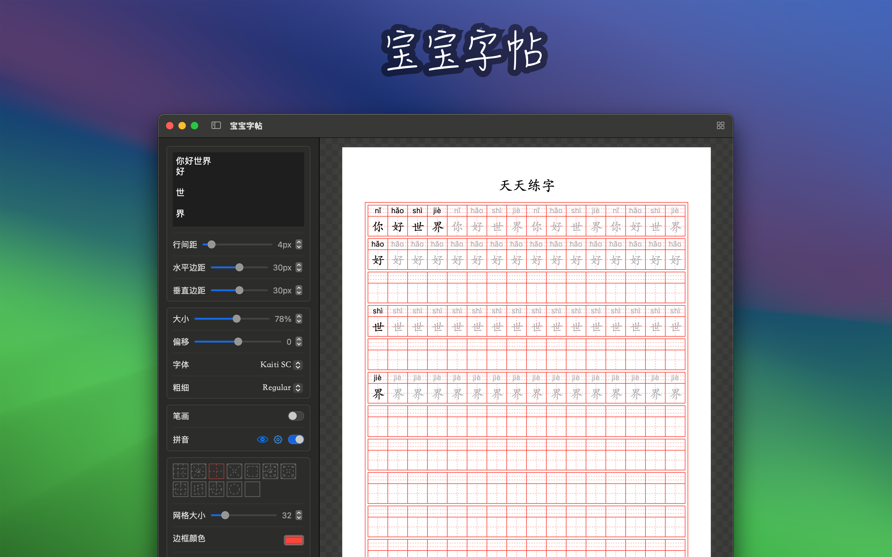
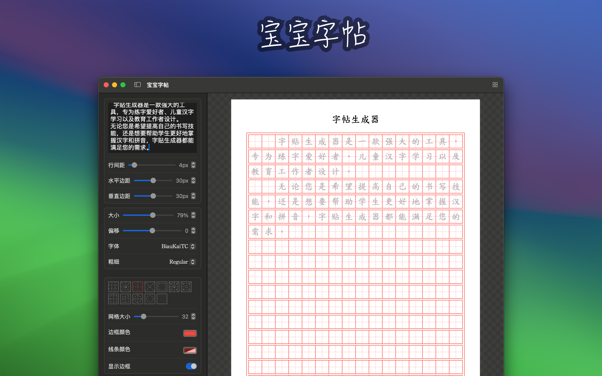
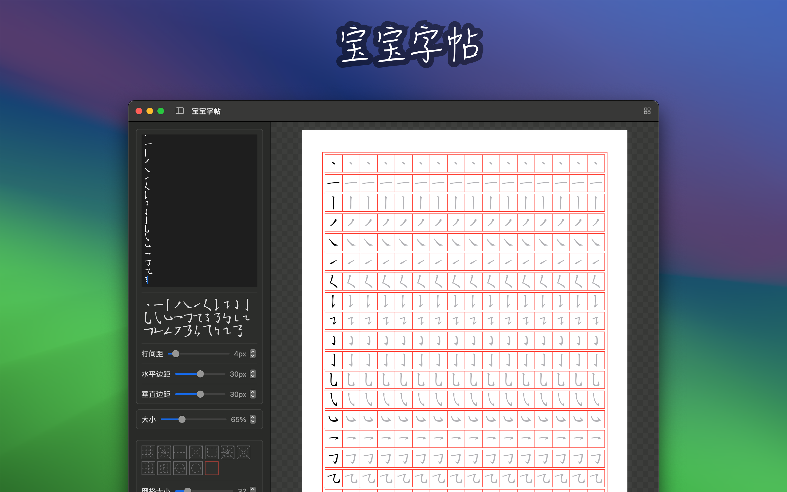
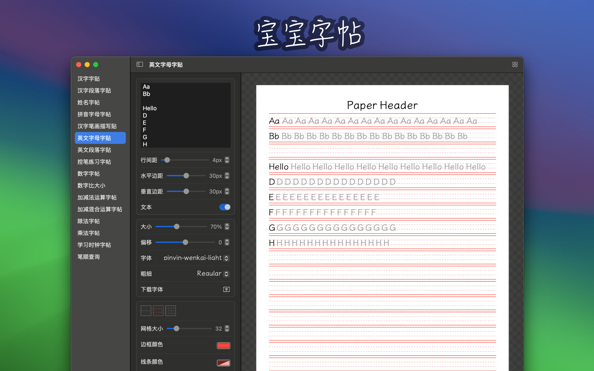
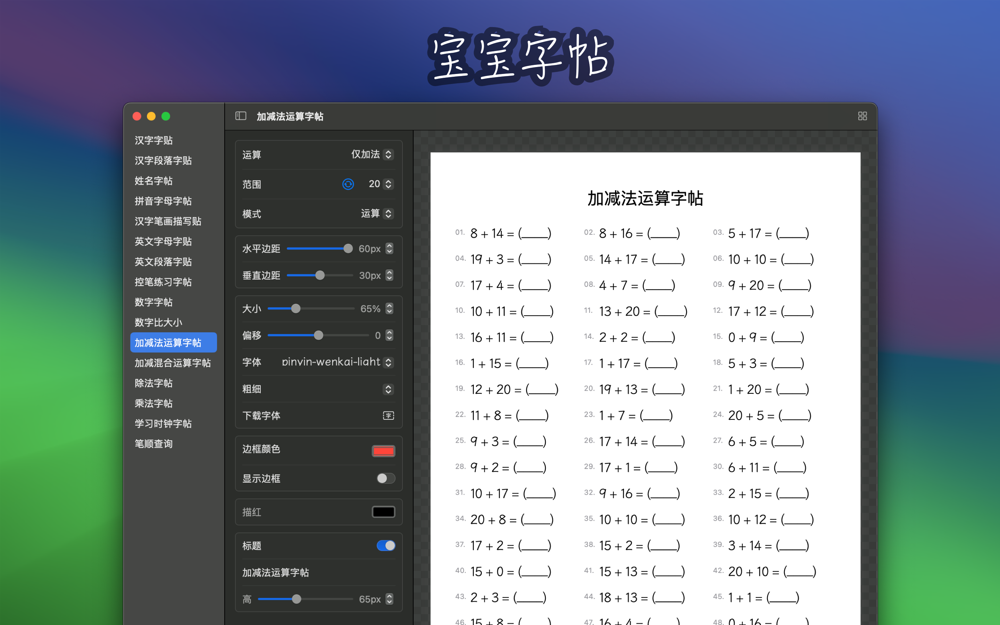

最低操作系统要求：macOS 14.0
「宝宝字帖」是一款功能强大的字帖生成工具，专为满足不同用户的书写练习需求而设计，并且会根据我自己宝宝的成长持续添加内容。字帖提供了多种类型的字帖生成功能，包括汉字字帖、汉字笔顺描写帖、字母字帖和笔控练习字帖。用户可以根据个人需求，自定义设置字帖模板的各种参数，以便打印和使用。

■ 汉字字帖：适合中文书写练习，帮助用户掌握汉字的正确书写方法。
■ 汉字笔顺描写帖：提供详细的汉字笔顺，帮助用户了解每个汉字的正确书写顺序，提升书写准确性。
■ 汉字姓名字帖：适合小朋友练习书写自己的中文名字，帮助小朋友正确书写自己的中文名字。
■ 拼音字母字帖：适合小朋友练习书写拼音字母，帮助小朋友正确书写拼音。
■ 英文字母字帖：适合英文书写练习，帮助用户提高英文字母书写能力。
■ 笔控练习字帖：专为书写初学者设计，帮助用户练习握笔姿势和书写力度，提升书写控制力。
■ 数字字帖：适合小朋友练习书写数字，提高数字书写能力。
■ 笔顺查询：提供汉字的正确书写顺序查询，帮助用户了解和掌握汉字的笔顺。
■ 英文段落字帖
■ 数字比大小
■ 加减运算字帖
■ 加减混合运算字帖
■ 除法字帖
■ 乘法字帖
■ 竖式计算字帖
■ 学习时钟字帖
■ 字体和格子：选择不同的字体和格子样式，满足各种书写练习需求。
■ 大小：调整字帖的字体大小，适应不同年龄段和学习阶段的用户。
■ 笔顺：提供汉字笔顺显示，帮助用户了解每个汉字的正确书写顺序。
■ 颜色：选择字帖字体的颜色，增加练习的趣味性和视觉效果。






可通过下面字体网站，下载需要的字体，然后重启字体宝宝，选择需要的字体。
中文 英文 字体中文 英文 字体中文 英文 字体中文 英文 字体英文 字体■ 学龄儿童：帮助学龄儿童练习书写，提高汉字和英文字母的书写能力。
■ 书法爱好者：提供专业的字帖模板，帮助书法爱好者进行临摹和练习。
■ 教育工作者：为教师提供教学工具，便于学生练习书写。
■ 书写初学者：通过笔控练习字帖，帮助初学者掌握正确的握笔姿势和书写力度。
宝宝字帖旨在通过灵活的定制选项和多样的功能，帮助用户轻松生成符合个人需求的字帖模板，提升书写能力。无论是初学者还是书写爱好者，都可以从中受益，享受书写练习的乐趣。